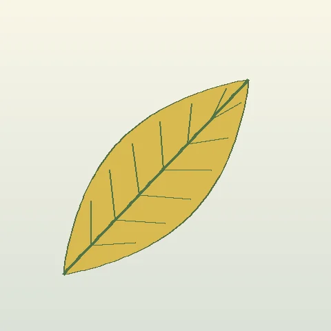

Iron chlorosis
Yellow tissue between green veins
This is one possible explanation. Compare the signs below with those on your plant.

What to look for
Record whether interveinal yellowing begins on the youngest or oldest leaves and photograph the upper surface.
Possible causes and next steps
Impaired uptake can reflect root damage or unsuitable pH. Use the species and a soil test to guide nutrition changes.